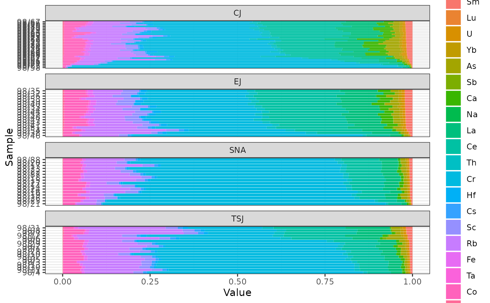

Displays a density plot.
Usage
# S4 method for LogRatio,missing
plot(
x,
...,
order = NULL,
decreasing = FALSE,
groups = get_groups(x),
rug = TRUE,
ticksize = 0.05,
ncol = NULL,
flip = FALSE,
xlab = NULL,
ylab = NULL,
main = NULL,
ann = graphics::par("ann"),
axes = TRUE,
frame.plot = axes,
legend = list(x = "topright")
)Arguments
- x
A
LogRatioobject.- ...
Further graphical parameters, particularly,
borderandcol.- order
A
logicalscalar: should the ratio be ordered?- decreasing
A
logicalscalar: should the sort order be increasing or decreasing?- groups
A
factorin the sense thatas.factor(groups)defines the grouping. If set, a matrix of panels defined bygroupswill be drawn.- rug
A
logicalscalar: should a rug representation (1-d plot) of the data be added to the plot?- ticksize
A length-one
numericvector giving the length of the ticks making up the rug. Positive lengths give inwards ticks. Only used ifrugisTRUE.- ncol
An
integerspecifying the number of columns to use whenfacetis "multiple". Defaults to 1 for up to 4 series, otherwise to 2.- flip
A
logicalscalar: should the y-axis (ticks and numbering) be flipped from side 2 (left) to 4 (right) from variable to variable?- xlab, ylab
A
charactervector giving the x and y axis labels.- main
A
characterstring giving a main title for the plot.- ann
A
logicalscalar: should the default annotation (title and x and y axis labels) appear on the plot?- axes
A
logicalscalar: should axes be drawn on the plot?- frame.plot
A
logicalscalar: should a box be drawn around the plot?- legend
A
listof additional arguments to be passed tographics::legend(); names of the list are used as argument names. IfNULL, no legend is displayed.
Value
plot() is called for its side-effects: is results in a graphic being
displayed (invisibly return x).
Examples
## Data from Day et al. 2011
data("kommos", package = "folio") # Coerce to compositional data
kommos <- remove_NA(kommos, margin = 1) # Remove cases with missing values
coda <- as_composition(kommos, groups = 1) # Use ceramic types for grouping
#> 1 qualitative variable was removed: date.
## Log ratio
clr <- transform_clr(coda)
plot(clr, group = NULL, flip = TRUE, border = "black", col = NA)
plot(clr, flip = TRUE)
